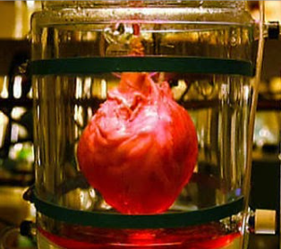

| OPINIÓN |  | • En mi opinión, aunque todavía sea difícil la fabricación de trasplantes de corazón, con el tiempo los médicos, doctores, etc, podrán lograr eficiencia en la fabricación para así poder salvar a más personas que necesiten aquel trasplante. Además, con los procesos que hay en la actualidad, gracias a los bioingenieros, se ha podido avanzar un 80%. |